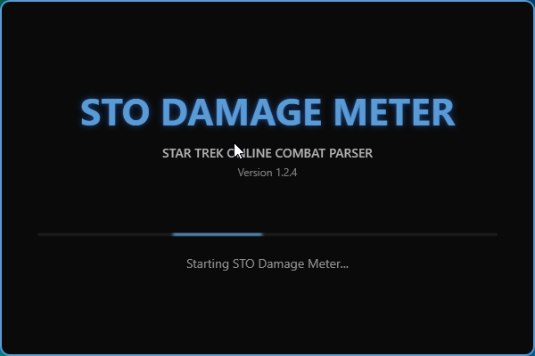
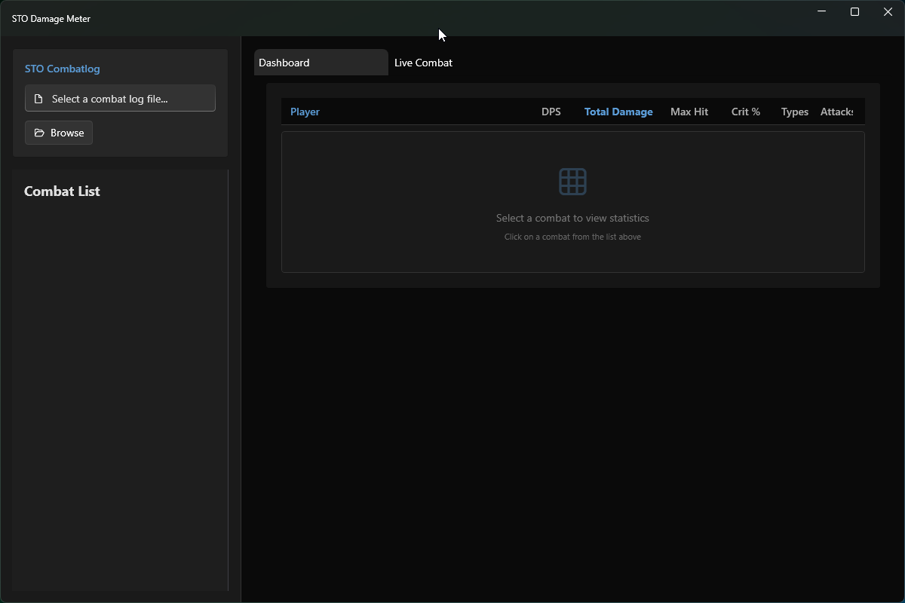
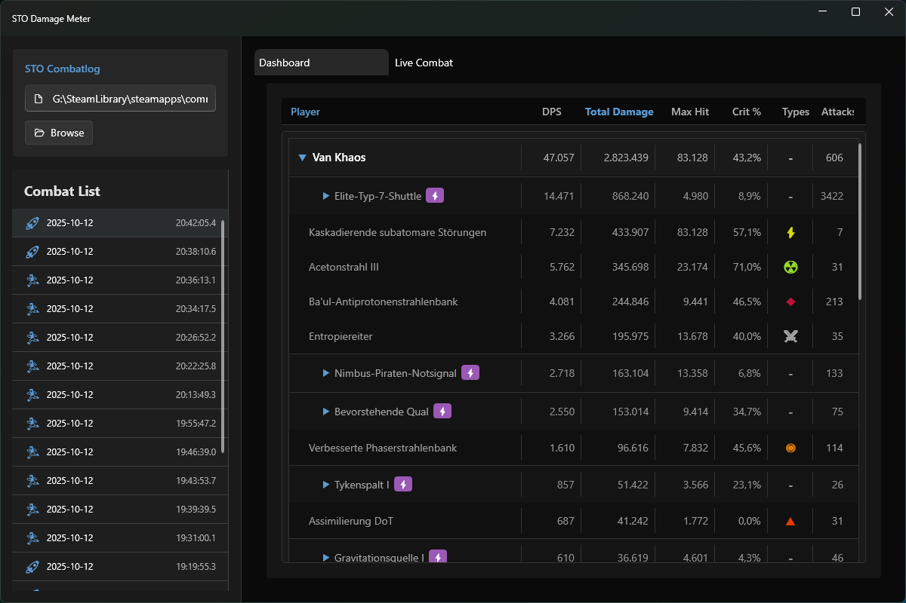
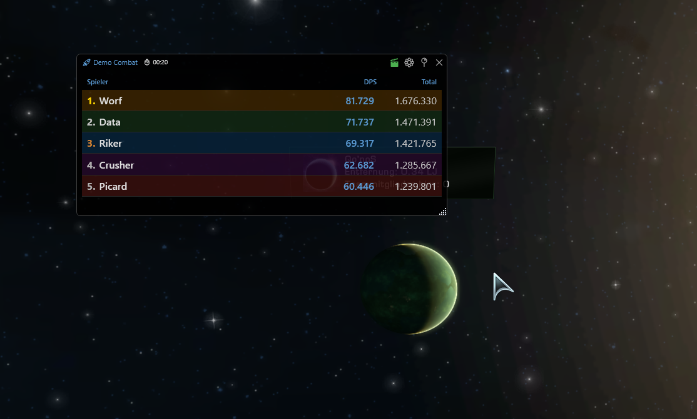

Ein moderner Combat Parser für Star Trek Online
Leistungsstarke Analyse für deine Star Trek Online Kämpfe
Verfolge deine Kämpfe in Echtzeit mit automatischer Combat-Erkennung und Updates alle 0,5 Sekunden.
Schwebendes, transparentes Overlay mit Player-Rankings, anpassbarer Schriftgröße und Pin-Funktion.
3-Level-Hierarchie: Player → Companion → Ability mit DPS, Total Damage, Crit%, Max Hit und mehr.
Automatische Erkennung von Combat-Typen und Combat-Type-Wechsel mit intelligenter Splitting-Logik.
Overlay nur sichtbar wenn STO aktiv ist. Automatisches Ein-/Ausblenden bei Tab-Wechsel (optional).
100% sicher. Kein Memory-Reading, keine Code-Injection. Nur Log-File-Parsing mit Standard-APIs.
Einblicke in die Anwendung




In 3 einfachen Schritten einsatzbereit
Entpacke die ZIP-Datei in einen beliebigen Ordner und starte StoDamageMeter.exe per Doppelklick.
Klicke auf "Browse" und navigiere zu:
Star Trek Online\Live\logs\GameClient\combatlog.log
/combatlog 1 im Chat-NoAutoRotateLogs100% sicher und EULA-konform
combatlog.log TextdateiSTO Damage Meter verwendet die gleiche Parsing-Logik wie etablierte Community-Tools wie OSCR (Open STO Combat Reparser) und CLR (Combat Log Reader), die seit Jahren von der Community genutzt werden ohne Probleme.
Das Projekt ist vollständig Open Source - der gesamte Code ist einsehbar auf GitHub.
Neueste Version: 1.2.4
Veröffentlicht am 13. Oktober 2025
Windows 10 (64-bit) oder höher
Minimum 4 GB, empfohlen 8 GB
300 MB für Anwendung, 500 MB für Logs
Nicht erforderlich (Self-Contained)